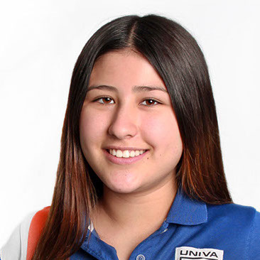
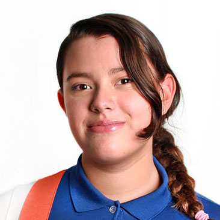
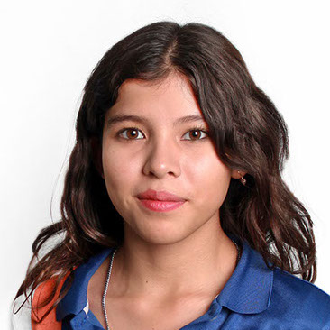
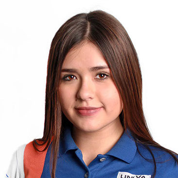

Los Artistas
Guillermo Aguilar Frías
Pintura basada en boceto de Da Vinci

Ana Paola Cárdenas Gutiérrez
Composición artística con bocetos de Da Vinci

Ana Paula Casillas López
La Gioconda

Yara Alexia X Estrella López
La Bella Principessa

Regina González Salman
Salvator Mundi
Hazel Sofía Hassan Ruiz
La dama del armiño
Camila Alexandra Jiménez González
La Belle Ferronière
Itzia Mariana Ramírez Galicia
San Jerónimo

Jacqueline Santos Campos
Beatriz de Este